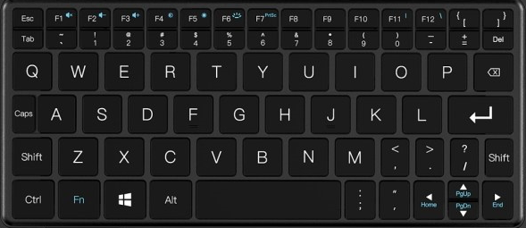

Keyboard layout adventures
Three bépo layout related stories
I've been using a french dvorak-like key layout, called bépo for about 13 years; sometimes, I need to hack things around to have it work everywhere, like when I wrote support for it android physical keyboards.
GPD Win Max Adaptation
I acquired recently a GPD Win Max, which is a descendant from netbooks crossed with a portable game console, and it quickly became my main computer (my old laptop was 10 years old, so it was indeed an upgrade).
While it's a very capable little device, it has a very condensed keyboard, which does not make it easy to use, especially when typing in bépo:
As you can see, it has been custom-designed for qwerty, and does not take into account other keyboard layouts. For example, there's no AltGr, and semicolon is hidden next to space. 60% keyboard owners would be right at home, if it were not for the lack of programmability of the layers.
In bépo, semicolon maps to N, which is a relatively common key. I decided to remap it like this, with bépo in mind:
I replaced Enter with semicolon (N in bépo), and put Enter next to Space, taking inspiration from the split keyboards which better utilize thumbs for typing. I moved Alt on the Windows key, which I almost never use, and put AltGr on the semicolon key. Finally, I depend much more on Tab than Caps Lock, so I swapped the two keys.
To do this in Linux, once upon a time, on had to modify the xmodmap key, or create a custom xkb layout. Both of these would be less useful today: one still needs to type a passphrase before the X server starts (to unlock the disks), or to type stuff in wayland apps (which don't use X layout). Fortunately, starting udev 175, it's now possible to rearrange physical keys directly with udev. See for example this tutorial or this one in french (english here).
So I decided to re-order the keys (scancodes) at the udev level, to make use of the bépo layout as-is. The first step it to find which input device is the keyboard. I like looking into
/proc/bus/input/devices.
On x86 laptops, the keyboard is usually accessible through the i8042 device:
texte
It says here its sysfs device is
/devices/platform/i8042/serio0/input/input4.
I want to know how to match this device with udev, so I run:
texte
The interesting line here is the
MODALIAS.I'll use the input:b0011v0001p0001eAB83…line to match precisely this keyboard, and ask udev to swap its keys. In order to do this, I follow the tutorial I linked earlierand create a file in /etc/udev/hwdb.d:
texte
Then update the udev hwdb:
texte
and re-trigger rules for this device:
texte
Note that I use the device node instead of the sysfs path for the trigger:
/dev/input/event4.
Yubikey OTP with bépo
A Yubikey used in OTP mode will send keys that have been selected to be a common "subset" between common western layouts: qwerty, azerty, qwertz, etc. Of course, no key is at the same place in bépo, so this this doesn't work.
Using the exact same methodology as before, it's possible to use a Yubikey (in OTP mode) without changing the keymap to qwerty/azerty before use. Here is the file I now have on multiple machines:
texte
Fun fact: it wouldn't be needed if we had a way to always use a given keymap (say, qwerty) for a device that sends keys like this. And there is such a way, kinda: the systemd developers added such a feature in hwdb 5 years ago, but it still isn't honored by desktop environments.
Inability to type with bépo AFNOR in a Linux console
In 2015, a french standardization process was started to make new and homogeneous french keyboard layouts. In 2019, a new AZERTY layout was standardized. In addition to this, years of community efforts (of which I had nothing to do with, but I saw the countless mailing list messages) helped standardize at the same time a new BÉPO layout, bépo 1.1, or bépo AFNOR.
It's almost the same as bépo 1.0, so moving to it was pretty painless. It was also integrated relatively quickly in Linux distributions via the xkeyboard-config project (although it does not have all the compose goodies, which are mostly for exotic characters).
While it was painless to use in desktop environments, this layout did not load during boot in console mode, which plymouth uses for querying the disk passphrase. Since it did not load, the fallback was to an unconfigured qwerty layout, which is not the most comfortable to type passphrase if you're not used to it. It was reported to Debian, but the issue is identical in Fedora or Ubuntu. After being annoyed for a few months, I took some time to try to fix it.
Virtual TTY keyboard layouts are first converted by ckbcomp from the xkb format, and then loaded into the kernel by kbd. So I had a look at kbd, and after messing around, I sent the following patch upstream:
texte
As you can see, a single symbol '🄯' couldn't be loaded because its unicode value is 5 hex characters instead of 4, and is bigger than the max of 0xf000. So I made the lexer regex recognize longer unicode characters (up to 6, the max allowed), and made the range go to the current unicode limit as well.
Only there is one issue: it was simply incorrect. While it worked on my machine, it was just the wrong thing to do, as you can see with this answer from Alexey Gladkov, kbd's maintainer:
Nop. Partially keymap loading is very dangerous. You can get a completely unusable console. The libkeymap shouldn't break the console if it is known in advance that the keymap is not correct. You should fix ckbcomp so that it generates the correct keymap.
This is because the linux kernel simply does not support loading unicode symbols greater than 0xf000 with the KDSETKEYCODE ioctl, because the ABI uses 16-bits values. There are probably other reasons internal to the kernel console keyboard or font handling, but I haven't dug into why.
So I changed my patch to kbd show a better error message instead
texte
And then started looking at ckbcomp a huge perl script, part of the console-setup project, that is used to do the conversion from xkb format, to a format understandable by kbd.
It already had provisions for removing unknown symbols with the internal $voidsymbol, which I used to replace any character outside of the range supported by Linux.
Here is the patch I sent upstream>
texte
Unfortunately, I've yet to hear from the console-setup maintainers on whether this is correct or not. I'll update this article if the situation changes. In the meantime, I was able to scratch my itch, and I can now type my disk unlock passphrase in plymouth with the bépo 1.1 key layout.